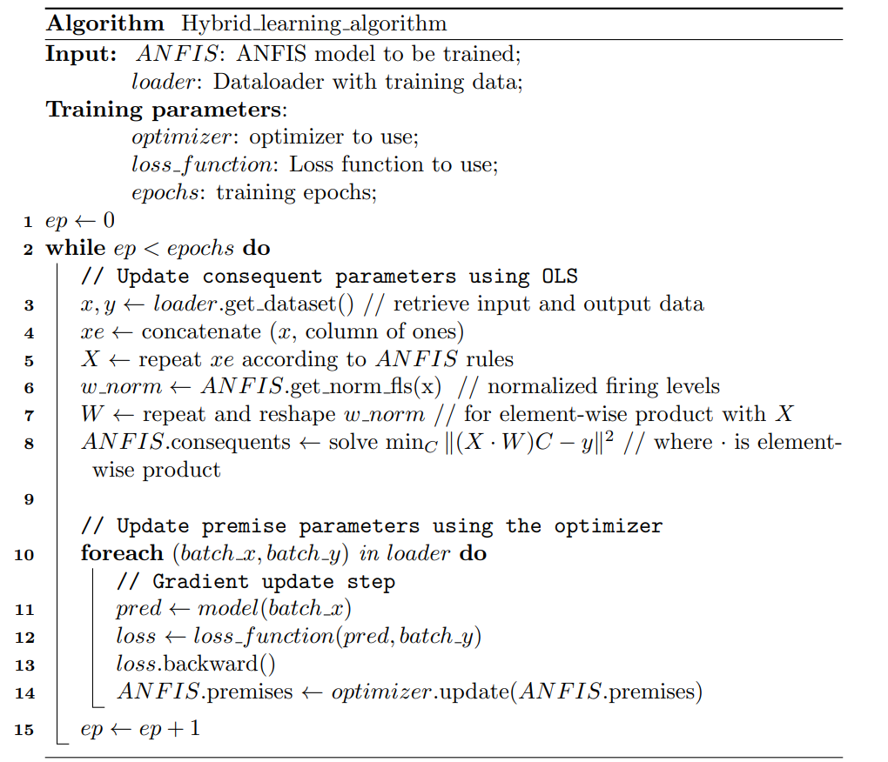
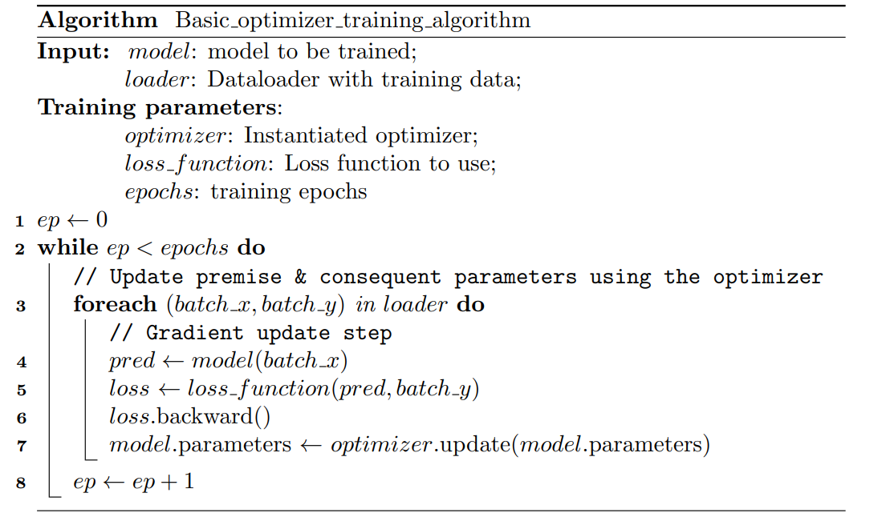

Training Algorithms
Este módulo contiene información sobre los algoritmos de entrenamiento para los modelos disponibles en Neuro-Fuzzy Toolbox.
Hybrid Learning Algorithm
- class neuro_fuzzy_toolbox.training.training_algorithms.Hybrid_learning_algorithm(epochs, loss_function, validation=0, early_stopping=None, optimizer=<class 'torch.optim.adam.Adam'>, optimizer_params={})[source]
Bases:
base_model_trainerClase para representar un algoritmo de entrenamiento híbrido para un modelo de Sistema de Inferencia Neuro-Difuso Adaptativo (ANFIS).
Note
Este algoritmo está basado en el algoritmo de entrenamiento híbrido propuesto por Jang en 1993, para mas información ver: ANFIS: adaptive-network-based fuzzy inference system.
Pseudocódigo:

- __call__(model, loader, verbose=True)
Entrena un modelo utilizando el algoritmo de entrenamiento.
- Parameters:
model (torch.nn.Module) – Modelo a entrenar.
loader (DataLoader) – DataLoader con los datos de entrenamiento.
verbose (bool) – Indica si se deben imprimir mensajes de aviso (Default: True).
- __init__(epochs, loss_function, validation=0, early_stopping=None, optimizer=<class 'torch.optim.adam.Adam'>, optimizer_params={})[source]
Inicializa una nueva instancia de la clase Hybrid_learning_algorithm.
- Parameters:
epochs (int) – Número de épocas de entrenamiento.
loss_function (torch.nn.functional) – Función de pérdida a utilizar en el entrenamiento.
validation (float) – Proporción de los datos de entrenamiento a utilizar como datos de validación (Default: 0).
early_stopping (EarlyStopping) – Mecanismo de Early Stopping a utilizar en el entrenamiento (Default: None).
optimizer (torch.optim) – Optimizador a utilizar en el entrenamiento (Default: torch.optim.Adam).
optimizer_params (dict) – Parámetros a utilizar en el optimizador (Default: {}).
{kind=link}
Basic Optimizer Based Training Algorithm
- class neuro_fuzzy_toolbox.training.training_algorithms.Basic_optimizer_training_algorithm(epochs, loss_function, validation=0, early_stopping=None, optimizer=<class 'torch.optim.adam.Adam'>, optimizer_params={})[source]
Bases:
base_model_trainerClase para representar un algoritmo de entrenamiento por optimización para un modelo de aprendizaje automático. Solo permite entrenar modelos de aprendizaje automático con un solo optimizador para todos los parámetros del modelo.
Pseudocódigo:

- __call__(model, loader, verbose=True)
Entrena un modelo utilizando el algoritmo de entrenamiento.
- Parameters:
model (torch.nn.Module) – Modelo a entrenar.
loader (DataLoader) – DataLoader con los datos de entrenamiento.
verbose (bool) – Indica si se deben imprimir mensajes de aviso (Default: True).
- __init__(epochs, loss_function, validation=0, early_stopping=None, optimizer=<class 'torch.optim.adam.Adam'>, optimizer_params={})[source]
Inicializa una nueva instancia de la clase Basic_optimizer_training_algorithm.
- Parameters:
epochs (int) – Número de épocas de entrenamiento.
loss_function (torch.nn.functional) – Función de pérdida a utilizar en el entrenamiento.
validation (float) – Proporción de los datos de entrenamiento a utilizar como datos de validación (Default: 0).
early_stopping (EarlyStopping) – Mecanismo de Early Stopping a utilizar en el entrenamiento (Default: None).
optimizer (torch.optim) – Optimizador a utilizar en el entrenamiento (Default: torch.optim.Adam).
optimizer_params (dict) – Parámetros a utilizar en el optimizador (Default: {}).
{kind=link}
base model training class
- class neuro_fuzzy_toolbox.training.training_algorithms.base_model_trainer(epochs, loss_function, validation=0, early_stopping=None, optimizer=<class 'torch.optim.adam.Adam'>, optimizer_params={})[source]
Clase base para representar un algoritmo de entrenamiento para un modelo de aprendizaje automático.
Warning
No debe ser instanciada directamente. Solo sirve para ser heredada por otras clases.
Note
- Las clases que hereden de esta clase deben implementar las funciones:
_update_parameters(model, loader): ejecuta la actualización de parámetros durante una sola época el entrenamiento del modelo.
init_optimizer(self, model, optimizer, optim_params): instancia el optimizador a utilizar durante el entrenamiento del modelo.
- __call__(model, loader, verbose=True)[source]
Entrena un modelo utilizando el algoritmo de entrenamiento.
- Parameters:
model (torch.nn.Module) – Modelo a entrenar.
loader (DataLoader) – DataLoader con los datos de entrenamiento.
verbose (bool) – Indica si se deben imprimir mensajes de aviso (Default: True).